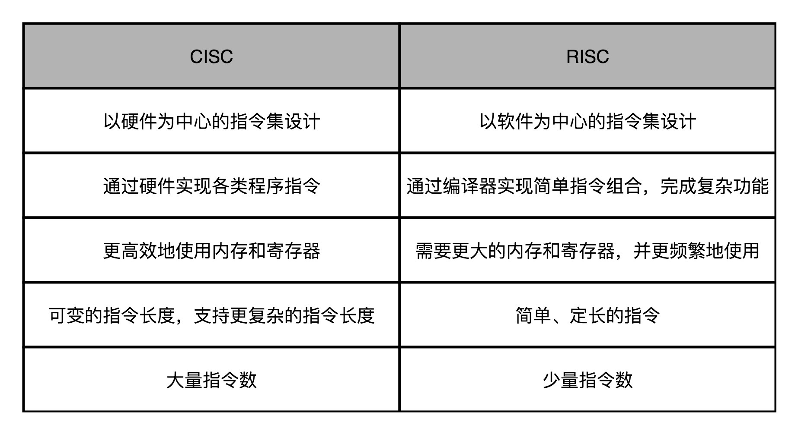
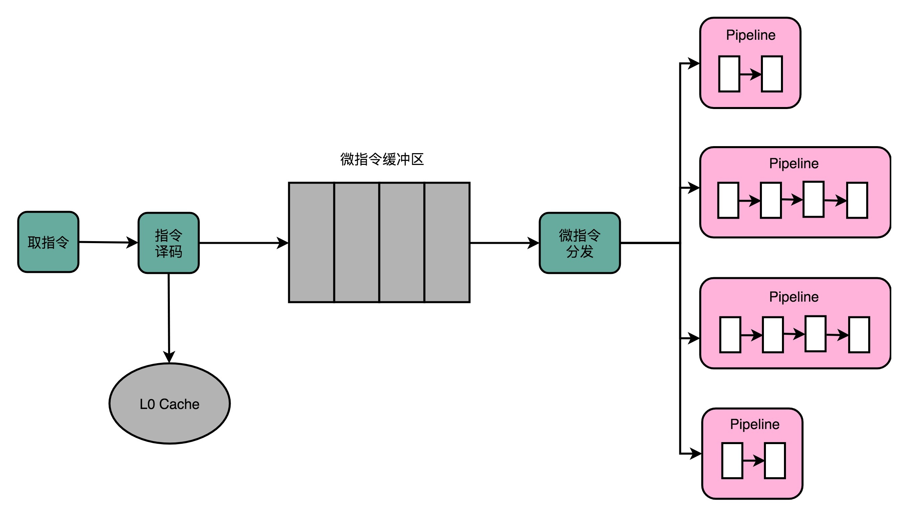

- 00 开篇词 为什么你需要学习计算机组成原理？.md.html
- 01 冯·诺依曼体系结构：计算机组成的金字塔.md.html
- 02 给你一张知识地图，计算机组成原理应该这么学.md.html
- 03 通过你的CPU主频，我们来谈谈“性能”究竟是什么？.md.html
- 04 穿越功耗墙，我们该从哪些方面提升“性能”？.md.html
- 05 计算机指令：让我们试试用纸带编程.md.html
- 06 指令跳转：原来if...else就是goto.md.html
- 07 函数调用：为什么会发生stack overflow？.md.html
- 08 ELF和静态链接：为什么程序无法同时在Linux和Windows下运行？.md.html
- 09 程序装载：“640K内存”真的不够用么？.md.html
- 10 动态链接：程序内部的“共享单车”.md.html
- 11 二进制编码：“手持两把锟斤拷，口中疾呼烫烫烫”？.md.html
- 12 理解电路：从电报机到门电路，我们如何做到“千里传信”？.md.html
- 13 加法器：如何像搭乐高一样搭电路（上）？.md.html
- 14 乘法器：如何像搭乐高一样搭电路（下）？.md.html
- 15 浮点数和定点数（上）：怎么用有限的Bit表示尽可能多的信息？.md.html
- 16 浮点数和定点数（下）：深入理解浮点数到底有什么用？.md.html
- 17 建立数据通路（上）：指令加运算=CPU.md.html
- 18 建立数据通路（中）：指令加运算=CPU.md.html
- 19 建立数据通路（下）：指令加运算=CPU.md.html
- 20 面向流水线的指令设计（上）：一心多用的现代CPU.md.html
- 21 面向流水线的指令设计（下）：奔腾4是怎么失败的？.md.html
- 22 冒险和预测（一）：hazard是“危”也是“机”.md.html
- 23 冒险和预测（二）：流水线里的接力赛.md.html
- 24 冒险和预测（三）：CPU里的“线程池”.md.html
- 25 冒险和预测（四）：今天下雨了，明天还会下雨么？.md.html
- 26 Superscalar和VLIW：如何让CPU的吞吐率超过1？.md.html
- 27 SIMD：如何加速矩阵乘法？.md.html
- 28 异常和中断：程序出错了怎么办？.md.html
- 29 CISC和RISC：为什么手机芯片都是ARM？.md.html
- 30 GPU（上）：为什么玩游戏需要使用GPU？.md.html
- 31 GPU（下）：为什么深度学习需要使用GPU？.md.html
- 32 FPGA、ASIC和TPU（上）：计算机体系结构的黄金时代.md.html
- 33 解读TPU：设计和拆解一块ASIC芯片.md.html
- 34 理解虚拟机：你在云上拿到的计算机是什么样的？.md.html
- 35 存储器层次结构全景：数据存储的大金字塔长什么样？.md.html
- 36 局部性原理：数据库性能跟不上，加个缓存就好了？.md.html
- 37 理解CPU Cache（上）：“4毫秒”究竟值多少钱？.md.html
- 38 高速缓存（下）：你确定你的数据更新了么？.md.html
- 39 MESI协议：如何让多核CPU的高速缓存保持一致？.md.html
- 40 理解内存（上）：虚拟内存和内存保护是什么？.md.html
- 41 理解内存（下）：解析TLB和内存保护.md.html
- 42 总线：计算机内部的高速公路.md.html
- 43 输入输出设备：我们并不是只能用灯泡显示“0”和“1”.md.html
- 44 理解IO_WAIT：IO性能到底是怎么回事儿？.md.html
- 45 机械硬盘：Google早期用过的“黑科技”.md.html
- 46 SSD硬盘（上）：如何完成性能优化的KPI？.md.html
- 47 SSD硬盘（下）：如何完成性能优化的KPI？.md.html
- 48 DMA：为什么Kafka这么快？.md.html
- 49 数据完整性（上）：硬件坏了怎么办？.md.html
- 50 数据完整性（下）：如何还原犯罪现场？.md.html
- 51 分布式计算：如果所有人的大脑都联网会怎样？.md.html
- 52 设计大型DMP系统（上）：MongoDB并不是什么灵丹妙药.md.html
- 53 设计大型DMP系统（下）：SSD拯救了所有的DBA.md.html
- 54 理解Disruptor（上）：带你体会CPU高速缓存的风驰电掣.md.html
- 55 理解Disruptor（下）：不需要换挡和踩刹车的CPU，有多快？.md.html
- 结束语 知也无涯，愿你也享受发现的乐趣.md.html
- 捐赠
29 CISC和RISC：为什么手机芯片都是ARM？
我在第 5 讲讲计算机指令的时候，给你看过 MIPS 体系结构计算机的机器指令格式。MIPS 的指令都是固定的 32 位长度，如果要用一个打孔卡来表示，并不复杂。

MIPS 机器码的长度都是固定的 32 位
第 6 讲的时候，我带你编译了一些简单的 C 语言程序，看了 x86 体系结构下的汇编代码。眼尖的话，你应该能发现，每一条机器码的长度是不一样的。
Intel x86 的机器码的长度是可变的
而 CPU 的指令集里的机器码是固定长度还是可变长度，也就是复杂指令集（Complex Instruction Set Computing，简称 CISC）和精简指令集（Reduced Instruction Set Computing，简称 RISC）这两种风格的指令集一个最重要的差别。那今天我们就来看复杂指令集和精简指令集之间的对比、差异以及历史纠葛。
CISC VS RISC：历史的车轮不总是向前的
在计算机历史的早期，其实没有什么 CISC 和 RISC 之分。或者说，所有的 CPU 其实都是 CISC。
虽然冯·诺依曼高屋建瓴地提出了存储程序型计算机的基础架构，但是实际的计算机设计和制造还是严格受硬件层面的限制。当时的计算机很慢，存储空间也很小。《人月神话》这本软件工程界的名著，讲的是花了好几年设计 IBM 360 这台计算机的经验。IBM 360 的最低配置，每秒只能运行 34500 条指令，只有 8K 的内存。为了让计算机能够做尽量多的工作，每一个字节乃至每一个比特都特别重要。
所以，CPU 指令集的设计，需要仔细考虑硬件限制。为了性能考虑，很多功能都直接通过硬件电路来完成。为了少用内存，指令的长度也是可变的。就像算法和数据结构里的赫夫曼编码（Huffman coding）一样，常用的指令要短一些，不常用的指令可以长一些。那个时候的计算机，想要用尽可能少的内存空间，存储尽量多的指令。
不过，历史的车轮滚滚向前，计算机的性能越来越好，存储的空间也越来越大了。到了 70 年代末，RISC 开始登上了历史的舞台。当时，UC Berkeley的大卫·帕特森（David Patterson）教授发现，实际在 CPU 运行的程序里，80% 的时间都是在使用 20% 的简单指令。于是，他就提出了 RISC 的理念。自此之后，RISC 类型的 CPU 开始快速蓬勃发展。
我经常推荐的课后阅读材料，有不少是来自《计算机组成与设计：硬件 / 软件接口》和《计算机体系结构：量化研究方法》这两本教科书。大卫·帕特森教授正是这两本书的作者。此外，他还在 2017 年获得了图灵奖。

RISC 架构的 CPU 究竟是什么样的呢？为什么它能在这么短的时间内受到如此大的追捧？
RISC 架构的 CPU 的想法其实非常直观。既然我们 80% 的时间都在用 20% 的简单指令，那我们能不能只要那 20% 的简单指令就好了呢？答案当然是可以的。因为指令数量多，计算机科学家们在软硬件两方面都受到了很多挑战。
在硬件层面，我们要想支持更多的复杂指令，CPU 里面的电路就要更复杂，设计起来也就更困难。更复杂的电路，在散热和功耗层面，也会带来更大的挑战。在软件层面，支持更多的复杂指令，编译器的优化就变得更困难。毕竟，面向 2000 个指令来优化编译器和面向 500 个指令来优化编译器的困难是完全不同的。
于是，在 RISC 架构里面，CPU 选择把指令“精简”到 20% 的简单指令。而原先的复杂指令，则通过用简单指令组合起来来实现，让软件来实现硬件的功能。这样，CPU 的整个硬件设计就会变得更简单了，在硬件层面提升性能也会变得更容易了。
RISC 的 CPU 里完成指令的电路变得简单了，于是也就腾出了更多的空间。这个空间，常常被拿来放通用寄存器。因为 RISC 完成同样的功能，执行的指令数量要比 CISC 多，所以，如果需要反复从内存里面读取指令或者数据到寄存器里来，那么很多时间就会花在访问内存上。于是，RISC 架构的 CPU 往往就有更多的通用寄存器。
除了寄存器这样的存储空间，RISC 的 CPU 也可以把更多的晶体管，用来实现更好的分支预测等相关功能，进一步去提升 CPU 实际的执行效率。
总的来说，对于 CISC 和 RISC 的对比，我们可以一起回到第 4 讲讲的程序运行时间的公式：
程序的 CPU 执行时间 = 指令数 × CPI × Clock Cycle Time
CISC 的架构，其实就是通过优化指令数，来减少 CPU 的执行时间。而 RISC 的架构，其实是在优化 CPI。因为指令比较简单，需要的时钟周期就比较少。
因为 RISC 降低了 CPU 硬件的设计和开发难度，所以从 80 年代开始，大部分新的 CPU 都开始采用 RISC 架构。从 IBM 的 PowerPC，到 SUN 的 SPARC，都是 RISC 架构。所有人看到仍然采用 CISC 架构的 Intel CPU，都可以批评一句“Complex and messy”。但是，为什么无论是在 PC 上，还是服务器上，仍然是 Intel 成为最后的赢家呢？
Intel 的进化：微指令架构的出现
面对这么多负面评价的 Intel，自然也不能无动于衷。更何况，x86 架构的问题并不能说明 Intel 的工程师不够厉害。事实上，在整个 CPU 设计的领域，Intel 集中了大量优秀的人才。无论是成功的 Pentium 时代引入的超标量设计，还是失败的 Pentium 4 时代引入的超线程技术，都是异常精巧的工程实现。
而 x86 架构所面临的种种问题，其实都来自于一个最重要的考量，那就是指令集的向前兼容性。因为 x86 在商业上太成功了，所以市场上有大量的 Intel CPU。而围绕着这些 CPU，又有大量的操作系统、编译器。这些系统软件只支持 x86 的指令集，就比如著名的 Windows 95。而在这些系统软件上，又有各种各样的应用软件。
如果 Intel 要放弃 x86 的架构和指令集，开发一个 RISC 架构的 CPU，面临的第一个问题就是所有这些软件都是不兼容的。事实上，Intel 并非没有尝试过在 x86 之外另起炉灶，这其实就是我在第26 讲介绍的安腾处理器。当时，Intel 想要在 CPU 进入 64 位的时代的时候，丢掉 x86 的历史包袱，所以推出了全新的 IA-64 的架构。但是，却因为不兼容 x86 的指令集，遭遇了重大的失败。
反而是 AMD，趁着 Intel 研发安腾的时候，推出了兼容 32 位 x86 指令集的 64 位架构，也就是 AMD64。如果你现在在 Linux 下安装各种软件包，一定经常会看到像下面这样带有 AMD64 字样的内容。这是因为 x86 下的 64 位的指令集 x86-64，并不是 Intel 发明的，而是 AMD 发明的。
Get:1 http://archive.ubuntu.com/ubuntu bionic/main amd64 fontconfig amd64 2.12.6-0ubuntu2 [169 kB]
复制代码
在 Ubuntu 下通过 APT 安装程序的时候，随处可见 AMD64 的关键字
花开两朵，各表一枝。Intel 在开发安腾处理器的同时，也在不断借鉴其他 RISC 处理器的设计思想。既然核心问题是要始终向前兼容 x86 的指令集，那么我们能不能不修改指令集，但是让 CISC 风格的指令集，用 RISC 的形式在 CPU 里面运行呢？
于是，从 Pentium Pro 时代开始，Intel 就开始在处理器里引入了微指令（Micro-Instructions/Micro-Ops）架构。而微指令架构的引入，也让 CISC 和 RISC 的分界变得模糊了。

在微指令架构的 CPU 里面，编译器编译出来的机器码和汇编代码并没有发生什么变化。但在指令译码的阶段，指令译码器“翻译”出来的，不再是某一条 CPU 指令。译码器会把一条机器码，“翻译”成好几条“微指令”。这里的一条条微指令，就不再是 CISC 风格的了，而是变成了固定长度的 RISC 风格的了。
这些 RISC 风格的微指令，会被放到一个微指令缓冲区里面，然后再从缓冲区里面，分发给到后面的超标量，并且是乱序执行的流水线架构里面。不过这个流水线架构里面接受的，就不是复杂的指令，而是精简的指令了。在这个架构里，我们的指令译码器相当于变成了设计模式里的一个“适配器”（Adaptor）。这个适配器，填平了 CISC 和 RISC 之间的指令差异。
不过，凡事有好处就有坏处。这样一个能够把 CISC 的指令译码成 RISC 指令的指令译码器，比原来的指令译码器要复杂。这也就意味着更复杂的电路和更长的译码时间：本来以为可以通过 RISC 提升的性能，结果又有一部分浪费在了指令译码上。针对这个问题，我们有没有更好的办法呢？
我在前面说过，之所以大家认为 RISC 优于 CISC，来自于一个数字统计，那就是在实际的程序运行过程中，有 80% 运行的代码用着 20% 的常用指令。这意味着，CPU 里执行的代码有很强的局部性。而对于有着很强局部性的问题，常见的一个解决方案就是使用缓存。
所以，Intel 就在 CPU 里面加了一层 L0 Cache。这个 Cache 保存的就是指令译码器把 CISC 的指令“翻译”成 RISC 的微指令的结果。于是，在大部分情况下，CPU 都可以从 Cache 里面拿到译码结果，而不需要让译码器去进行实际的译码操作。这样不仅优化了性能，因为译码器的晶体管开关动作变少了，还减少了功耗。
因为“微指令”架构的存在，从 Pentium Pro 开始，Intel 处理器已经不是一个纯粹的 CISC 处理器了。它同样融合了大量 RISC 类型的处理器设计。不过，由于 Intel 本身在 CPU 层面做的大量优化，比如乱序执行、分支预测等相关工作，x86 的 CPU 始终在功耗上还是要远远超过 RISC 架构的 ARM，所以最终在智能手机崛起替代 PC 的时代，落在了 ARM 后面。
ARM 和 RISC-V：CPU 的现在与未来
2017 年，ARM 公司的 CEO Simon Segards 宣布，ARM 累积销售的芯片数量超过了 1000 亿。作为一个从 12 个人起步，在 80 年代想要获取 Intel 的 80286 架构授权来制造 CPU 的公司，ARM 是如何在移动端把自己的芯片塑造成了最终的霸主呢？
ARM 这个名字现在的含义，是“Advanced RISC Machines”。你从名字就能够看出来，ARM 的芯片是基于 RISC 架构的。不过，ARM 能够在移动端战胜 Intel，并不是因为 RISC 架构。
到了 21 世纪的今天，CISC 和 RISC 架构的分界已经没有那么明显了。Intel 和 AMD 的 CPU 也都是采用译码成 RISC 风格的微指令来运行。而 ARM 的芯片，一条指令同样需要多个时钟周期，有乱序执行和多发射。我甚至看到过这样的评价，“ARM 和 RISC 的关系，只有在名字上”。
ARM 真正能够战胜 Intel，我觉得主要是因为下面这两点原因。
第一点是功耗优先的设计。一个 4 核的 Intel i7 的 CPU，设计的时候功率就是 130W。而一块 ARM A8 的单个核心的 CPU，设计功率只有 2W。两者之间差出了 100 倍。在移动设备上，功耗是一个远比性能更重要的指标，毕竟我们不能随时在身上带个发电机。ARM 的 CPU，主频更低，晶体管更少，高速缓存更小，乱序执行的能力更弱。所有这些，都是为了功耗所做的妥协。
第二点则是低价。ARM 并没有自己垄断 CPU 的生产和制造，只是进行 CPU 设计，然后把对应的知识产权授权出去，让其他的厂商来生产 ARM 架构的 CPU。它甚至还允许这些厂商可以基于 ARM 的架构和指令集，设计属于自己的 CPU。像苹果、三星、华为，它们都是拿到了基于 ARM 体系架构设计和制造 CPU 的授权。ARM 自己只是收取对应的专利授权费用。多个厂商之间的竞争，使得 ARM 的芯片在市场上价格很便宜。所以，尽管 ARM 的芯片的出货量远大于 Intel，但是收入和利润却比不上 Intel。
不过，ARM 并不是开源的。所以，在 ARM 架构逐渐垄断移动端芯片市场的时候，“开源硬件”也慢慢发展起来了。一方面，MIPS 在 2019 年宣布开源；另一方面，从 UC Berkeley 发起的RISC-V项目也越来越受到大家的关注。而 RISC 概念的发明人，图灵奖的得主大卫·帕特森教授从伯克利退休之后，成了 RISC-V 国际开源实验室的负责人，开始推动 RISC-V 这个“CPU 届的 Linux”的开发。可以想见，未来的开源 CPU，也多半会像 Linux 一样，逐渐成为一个业界的主流选择。如果想要“打造一个属于自己 CPU”，不可不关注这个项目。
总结延伸
这一讲，我从 RISC 和 CISC 架构之前的差异说起，讲到 RISC 的指令是固定长度的，CISC 的指令是可变长度的。RISC 的指令集里的指令数少，而且单个指令只完成简单的功能，所以被称为“精简”。CISC 里的指令数多，为了节约内存，直接在硬件层面能够完成复杂的功能，所以被称为“复杂”。RISC 的通过减少 CPI 来提升性能，而 CISC 通过减少需要的指令数来提升性能。
然后，我们进一步介绍了 Intel 的 x86 CPU 的“微指令”的设计思路。“微指令”使得我们在机器码层面保留了 CISC 风格的 x86 架构的指令集。但是，通过指令译码器和 L0 缓存的组合，使得这些指令可以快速翻译成 RISC 风格的微指令，使得实际执行指令的流水线可以用 RISC 的架构来搭建。使用“微指令”设计思路的 CPU，不能再称之为 CISC 了，而更像一个 RISC 和 CISC 融合的产物。
过去十年里，Intel 仍然把持着 PC 和服务器市场，但是更多的市场上的 CPU 芯片来自基于 ARM 架构的智能手机了。而在 ARM 似乎已经垄断了移动 CPU 市场的时候，开源的 RISC-V 出现了，也给了计算机工程师们新的设计属于自己的 CPU 的机会。
推荐阅读
又到了推荐阅读的时间了，这次我们又要一起来读论文了。
想要了解 x86 和 ARM 之间的功耗和性能的差异，以及这个差异到底从哪里来，你可以读一读《Power Struggles: Revisiting the RISC vs. CISC Debate on Contemporary ARM and x86 Architectures》这篇论文。
这个 12 页的论文仔细研究了 Intel 和 ARM 的差异，并且得出了一个结论。那就是 ARM 和 x86 之间的功耗差异，并不是来自于 CISC 和 RISC 的指令集差异，而是因为两类芯片的设计，本就是针对不同的性能目标而进行的，和指令集是 CISC 还是 RISC 并没有什么关系。
© 2019 - 2023 Liangliang Lee. Powered by gin and hexo-theme-book.